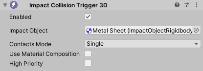
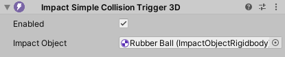

Impact Triggers
Impact Triggers are components that tell Impact Objects when to play interactions and with what data. They are the origin that provides the data which is sent to the object’s Impact Material to ultimately play the interactions defined on the material.
Physics Triggers
Included with Impact are a set of Impact Triggers that utilize Unity’s OnCollisionEnter and OnCollisionStay messages to trigger physics interactions. These triggers come in both 3D and 2D flavors.
Most Impact Triggers have the following properties:
- Enabled – Whether or not the trigger will process collision messages. You should use this if you want to disable the trigger, since the normal Behaviour.enabled property will still recieve collision messages if the component is disabled.
- Impact Object – The Impact Object collision data will be sent to. If empty, it will attempt to find an Impact Object on the collider that was hit or one of its parents.
- Contacts Mode – How the trigger will handle collision contacts.
- Single – Use only the first contact.
- Single Average – Average all contact points together to create a single contact point. Both the Position and Normal of the contact points will be averaged.
- Multiple – Use all contact points of the collision.
- Use Material Composition – If checked, the trigger will send collision data for each material present on the other object at the point of contact. This can be useful for objects like terrains where textures can be blended together. If not checked, it will use the most prominent material at the contact point.
- High Priority – If checked, the trigger will ignore the Physics Interactions Limit set in the Impact Manager and will always process collision messages.
Impact Collision Trigger
The Impact Collision Trigger is used to play interactions for single collisions using the OnCollisionEnter message.
Impact Velocity Collision Trigger
The Impact Velocity Collision Trigger works very similarly to the Impact Collision Trigger. However, unlike the normal collision trigger, it takes into account the actual change in velocity as a result of the collision. This can produce better results when objects of significantly different masses collide.
For example, if a 1000kg object and a 1kg object collide at high speed, the 1000kg object will experience almost no change in velocity, and thus will produce a less intense interaction. The 1kg object on the other hand will have a big change in velocity, and so will produce a more intense collision.
The Velocity Collision Trigger has one extra property:
- Velocity Change Influence – How much the change in velocity will influence the resulting intensity. A value of 0 means the velocity change has no influence, and will behave exactly the same as the normal collision trigger.
Impact Slide and Roll Trigger
The Impact Slide and Roll Trigger is used to play interactions when objects slide and roll against each other. This trigger uses the OnCollisionStay message.

The Slide and Roll Trigger has 2 extra properties:
- Slide Mode – Whether or not to trigger sliding interactions.
- Roll Mode – Whether or not to trigger rolling interactions.
Impact Simple Collision Trigger 
The Impact Simple Collision Trigger is similar to the normal Impact Collision Trigger, but it does not receive any collision data (such as velocity or the object that was collided with). You should only use this in cases where you do not need detailed collision data and high performance is necessary.
Impact Speculative Collision Trigger
The Impact Speculative Collision Trigger is a special trigger that acts similarly to the normal Impact Collision Trigger, but attempts to handle scenarios that may not register due to the Impact Collision Trigger's use of OnCollisionEnter. For example:
- A large, long object that falls over, but stays in contact with the ground the entire time and so does not trigger an OnCollisionEnter message when it hits the ground.
- Collisions against a single large non-convex mesh collider, where the floor and walls (and possibly ceiling) are part of the same mesh collider. If an object were to slide along the floor and hit a wall in this case, OnCollisionEnter would not be triggered.
This trigger has 3 extra properies:
- Max Collisions Per Frame – The maximum number of collisions that can be generated in a single frame.
- Contact Point Comparison – The threshold to use when comparing contact points. If the square magnitude of the difference of 2 contact points is less than this value, those 2 contact points are considered the same. A lower value will typically result in more contact points, while a higher value will result in fewer.
- Contact Point Lifetime – How many Fixed Update frames a contact point should be alive for before it is removed from the list of active contacts. Increasing this value can reduce the likelyhood of interactions happening in quick succession for the same contact point.
This trigger should only be used if absolutely necessary, as it requires more processing, is not always predictable, and may produce an over-abundance of interactions. Generally speaking the normal Collision Trigger is much more predictable.
Before using this trigger, it may be a good idea to examine your colliders to see if you can split single large colliders into multiple smaller colliders, since OnCollisionEnter will be called when different colliders of the same rigidbody are collided with.
Impact Particle Collision Trigger
The Impact Particle Collision Trigger is a special trigger for dealing with particle collisions.

When Particles is assigned to a particle system, the trigger will send interaction data when the particles of the particle system collide with the world to the Impact Object, as if each particle was its own Impact Object.
When not assigned a particle system, the trigger will act similarly to the Impact Collision Trigger, but will receive collision messages from particles.
Impact On Trigger Enter
Impact On Trigger Enter is a trigger that can be used for "Trigger" type colliders.
This trigger uses the OnTriggerEnter message to trigger interactions. It has a similar behavior to the normal Impact Collision Trigger and Impact Simple Collision Trigger that use OnCollisionEnter. It has one extra property:
- Contact Point Mode – Which object's position should be used as the contact point (since detailed contact point data is not available for OnTriggerEnter and OnTriggerStay).
- This Object – Use this object's position as the contact point.
- Other Object – Use the position of the other object as the contact point.
Impact On Trigger Stay
Impact On Trigger Stay is a trigger that can be used for "Trigger" type colliders.
This trigger uses the OnTriggerStay message to trigger interactions. It has a similar behavior to the normal Impact Slide and Roll Trigger, however it cannot differentiate between sliding and rolling, and so will default to sliding. It has one extra property:
- Contact Point Mode – Which object's position should be used as the contact point (since detailed contact point data is not available for OnTriggerEnter and OnTriggerStay).
- This Object – Use this object's position as the contact point.
- Other Object – Use the position of the other object as the contact point.
Other Triggers
Impact Raycast Trigger
The Impact Raycast Trigger is a general purpose utility class for triggering interactions from raycasts. Some examples of its applications could be:
- Footsteps – Raycasting downward from the player’s position to get the object they are walking over.
- Weapons – Using raycasts for bullets (either hitscan or with simulated ballistics) to get the object a bullet hit.
The Impact Raycast Trigger is a static class, so you do not need to add it as a component. The Trigger methods take RaycastHit or RaycastHit2D data (so you need to perform the raycasting in your code).
The Impact Raycast Trigger has several methods that fall into one of two categories:
- Trigger an interaction on the object that was hit by the raycast. You can either pass the Tag Mask, Velocity, From Object, and Interaction Type as separate parameters or pass in a pre-populated IInteractionData object. Use Material Composition, if enabled, will trigger an interaction for each material at the interaction point on the object that was hit.
- Trigger(ImpactTagMask tagMask, RaycastHit hit, Vector3 velocity, GameObject fromObject, int interactionType, bool useMaterialComposition)
- Trigger<T>(T interactionData, RaycastHit hit, bool useMaterialComposition) where T : IInteractionData
- Trigger2D(ImpactTagMask tagMask, RaycastHit2D hit, Vector3 velocity, GameObject fromObject, int interactionType, bool useMaterialComposition)
- Trigger2D<T>(T interactionData, RaycastHit2D hit, bool useMaterialComposition) where T : IInteractionData
- Trigger an interaction on a provided object, gathering material data from the object that was hit. For these you pass in the IImpactObject you want to trigger the interaction on. Use Material Composition, if enabled, will trigger an interaction for each material at the interaction point on the object that was hit.
- Trigger(IImpactObject impactObject, RaycastHit hit, Vector3 velocity, int interactionType, bool useMaterialComposition)
- Trigger<T>(T interactionData, RaycastHit hit, IImpactObject impactObject, bool useMaterialComposition) where T : IInteractionData
- Trigger2D(IImpactObject impactObject, RaycastHit2D hit, Vector3 velocity, int interactionType, bool useMaterialComposition)
- Trigger2D<T>(T interactionData, RaycastHit2D hit, IImpactObject impactObject, bool useMaterialComposition) where T : IInteractionData